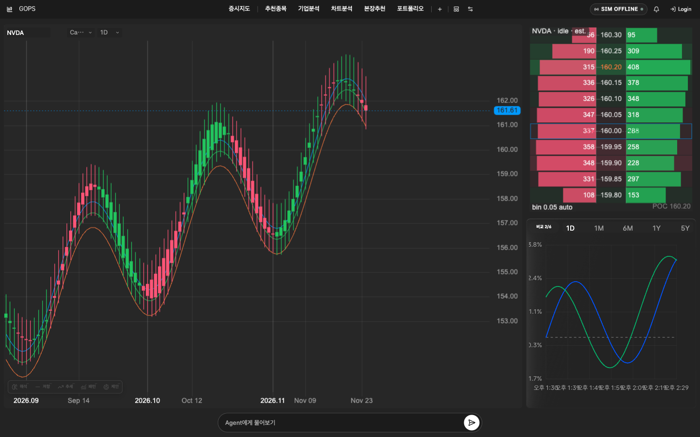
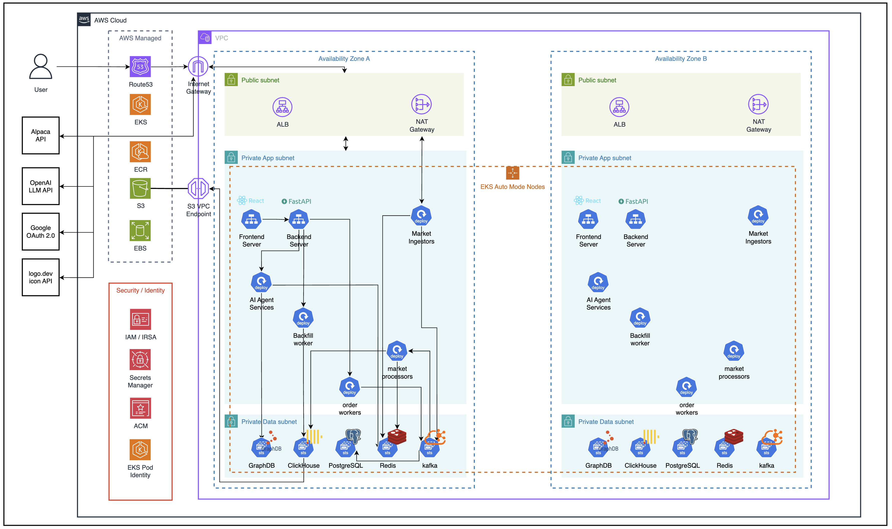

PERSONALIZED DISCOVERY
내 투자 기준을 수식으로 만드는
내 투자 기준을 수식으로 만드는
개인화 종목 추천
거래대금, 추세, 변동성 등 평가 요소의 가중치를 직접 편집합니다. 자연어로 설명한 방향은 AI가 계산 가능한 수식 초안으로 변환합니다.
추천 이유와 실제 적용 가중치를 함께 공개
흩어진 투자 도구를 개인화된 하나의 의사결정 루프로
결과만 제시하지 않고, 사용자가 기준과 근거를 확인하고 통제합니다.
거래대금, 추세, 변동성 등 평가 요소의 가중치를 직접 편집합니다. 자연어로 설명한 방향은 AI가 계산 가능한 수식 초안으로 변환합니다.

추세, 패턴, 지지·저항, 재무 요약을 한 화면에서 검증합니다. 설명을 선택하면 판단에 사용한 가격·봉·지표·시점이 즉시 강조됩니다.

차트의 지지·저항 가격을 주문 조건으로 이어가되, 수량·현재가 차이·입력 오류·과도한 위험을 별도 규칙으로 검사한 후 사용자가 최종 확정합니다.
거래 당시 확인한 증거와 행동을 스냅샷으로 남기고, 유사 거래를 비교해 반복되는 습관을 찾습니다. 발견된 개선점은 다음 거래의 기준과 알림으로 연결됩니다.
관심이 한 종목에 몰리는 순간에도 계산과 실시간 전달을 안정적으로 유지합니다.
파라미터를 request hash로 묶고 Redis Lock을 획득한 요청만 계산합니다. 나머지는 동일 Future·Cache 결과를 공유해 CPU 시간과 p95를 줄였습니다.
Kafka가 저장·분석 경로를 분리하고, API 서버가 Redis 이벤트를 한 번 구독한 뒤 연결된 브라우저로 fan-out합니다. 저장 장애도 전달 경로와 격리됩니다.
Multi-AZ EKS 위에서 실시간 데이터, AI 분석, 주문을 역할별로 격리한 확장형 구조
